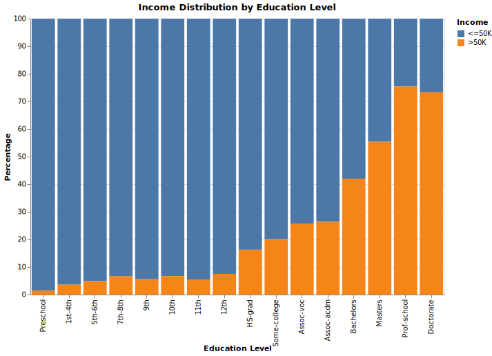

Visualization #1 - Bar Chart (Altair)
The bar char shows the likelhood of earning over $50,000 changes at differening level of educations, represented on the bottom x axis. Lower levels of education from preschool through grade school we can see a majority of people make less than $50,000. Once we reach high school levels of eduction we seen the porportion of over $50,000 earner increase and as we reach post-college education we can see a strong majority of people earn over $50,000. Overall increase in porportion of over $50,000 earners as education level increases indicates a possibly correlation between eduaction and earning potential.
Visualization #2 - Stacked Horizontal Bar Plot (Altair)
The visualization highlights income distribution by gender and race. It shows that lower-income groups (≤50K) are more prevalent than higher-income groups (>50K) for both males and females. White individuals dominate across all income brackets, while other racial groups are less represented. The chart underscores disparities in income linked to both gender and race, suggesting the need for further socio-economic analysis.
Visualization #3 - Box Plot (D3.js)
The box plot illustrates that individuals earning more than $50,000 per year generally work slightly more hours per week compared to those earning less. However, the interquartile ranges (IQRs) for both income groups—those earning ≤$50k and >$50k—overlap, indicating that the difference in work hours is subtle. While the median number of work hours is slightly higher for the higher-income group, both groups exhibit a wide spread in weekly work hours, suggesting considerable variation regardless of income level.
Visualization #4 - Interactive Scatter Plot (Altair)
This interactive scatter plot shows how capital gains vary by age, with filters for education and income to explore specific demographic patterns. Most data points cluster at low capital gains, while a few high-gain outliers highlight wealth disparities. Filtering by education or income reveals potential trends, such as whether higher education links to greater capital gains, offering deeper insights into wealth accumulation.
Visualization #5 - Choropleth Map
The choropleth map displays the percentage of individuals earning more than $50,000 across different countries. Darker shades represent a higher proportion of high earners. The United States stands out with a significantly larger sample size, which may limit the accuracy of direct comparisons with other countries. Nonetheless, the visualization begins to reveal global trends and disparities in income distribution.